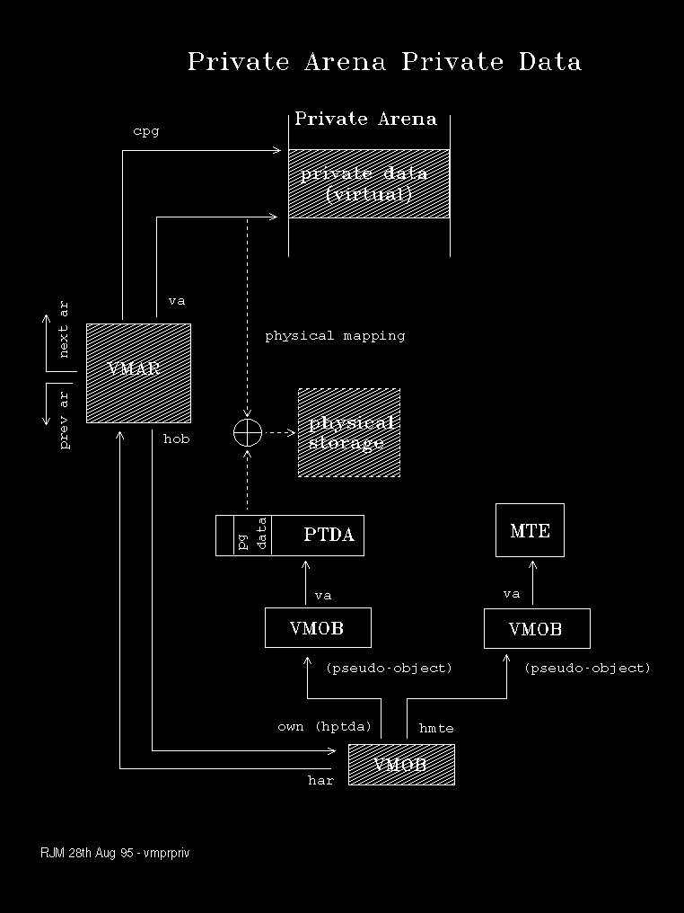

Private data, that is data in a Private Arena not accessible from any other context, is managed by VMARs and VMOBs as depicted by the following diagram.
Control blocks and data that directly represent the allocation are shown shaded. 